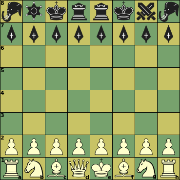

Sliding capture or non-capture,
can be blocked on any square along the ray


|  |
Initial setupBlack (Spartans)c8, f8: King White (Persians)f1: King |
Click on a piece below to see its moves
|
Sliding capture or non-capture, |
||||||||||
|
Unblockable leap (capture or non-capture) | ||||||||||
|
|
|
|
|
Non-capture only | ||||||
|
Capture only | ||||||||||
|
|
|
|
|
|
||||||
|
|||||||||||
:
:
:
:
| Piece | ID | value | Moves (Betza notation) | Remarks |
| King (Persian) | K | - | K | Can castle with Rook, moving 2 steps towards it |
| Queen | Q | 9.5 | RB or Q | |
| Rook | R | 5 | R | |
| Bishop | B | 3.25 | B | Color-bound |
| Knight | N | 3.25 | N | |
| Pawn | P | 1 | mfWcfF | Promotes to Q, R, B, or N on reaching last rank |
| King (Spartan) | K | 4.5 | K | Distributed Royalty: check only when all your Kings are in Check |
| Warlord | W | 8.75 | BN | |
| General | G | 7 | RF | |
| Lieutenant | L | 3.5 | FAmsW | Color-changing sideway non-capture move |
| Captain | C | 3 | WD | Has mating potential |
| Hoplite Pawn | H | 1 | mfFcfW | Promotes to K, W, G, L or C on reaching last rank |
The Persian King, if it has not moved before, can move two squares in the direction of a Rook that has not moved before, in which case that Rook is moved to the square the King skipped over. This is only allowed if all squares between King and Rook are empty, when the King is not in check on the square it came from, and would not be in check on any of the squares it skipped over.
The rule that the Spartans cannot leave both Kings attacked would not follow from a rule where you lose when all your Kings are captured. Because under that rule the opponent could at most capture one of the two in the next turn, and the next turn the other King could move to safety. So it is an special rule that leaving them both under attack is illegal, (and only then are you considered to be in check). In consequence that when you cannot get out of that check situation, you are (duple) checkmated. (It is as if at the begining of every turn you can decide anew which of your Kings is the royal one.)
The black army is completely different.
It is not possible to force checkmate on a bare King with just a single Bishop, Knight or Lieutenant (in addition to your own King). Two Knights cannot do that either.
Although Captains are worth less than orthodox minors B and N, they can force checkmate on a bare King. As a result the Spartans can often win when they are a minor ahead, if one of their minors is a Captain (e.g. KLCKB is a win, where KBNKB in FIDE is a draw).
A pair of Spartan Kings also can force checkmate against a bare King. Furthermore, Kings are tough defenders, because they cannot be attacked by the opponent's King. So if all the attacker's power is in a single piece, the defending King pair has nothing to fear when they protect each other. This makes even KQKK is a draw (provided the Spartan kings can connect).
Bishops are confined to squares of a single color. Having Bishops on both colors compensates this weakness, and is worth an extra 0.5 on top of their added value.
Because Hoplites can choose their path, they become passers very easily. This is only of limited value, though, as moving them around an obstructing Persian Pawn usually also gives the latter a free path to promotion. Hoplites do stay on the same color when they do not capture. A Bishop on the other color is thus powerless to stop their promotion.